Charts and instructions that always agree
Knitting Pattern Studio shows a knitting chart and its written instructions side by side. Both come from the same chart, so they always agree. It works out how many stitches to cast on and roughly how much yarn to buy, and checks your own designs for mistakes before you pick up your needles.
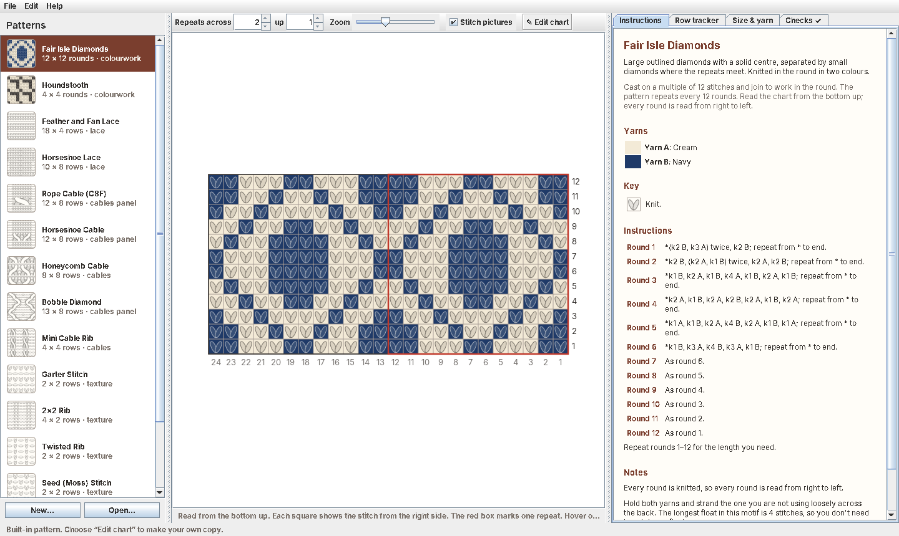
Knit from your phone or tablet
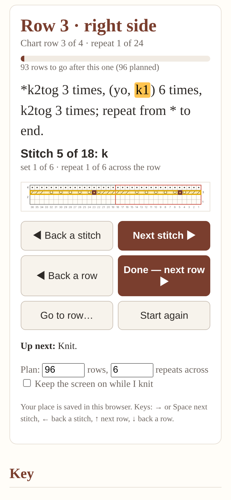
Every pattern below opens with a working row tracker. Tap Next stitch and the stitch you're on lights up on the chart and in the instructions. When you finish a repeat it moves across the row, and when you finish the row it moves up to the next one.
Your place is saved in your browser, so you can put your knitting down and pick up where you left off. On phones that allow it, the page can keep the screen on while you knit.
In the program, File → Export as web page makes a page like this for any pattern, including your own designs.
Try a pattern
Fifteen patterns come with the program, from garter stitch to a bobble-and-cable aran panel. Pick one to see its chart, key and instructions, and follow it with the tracker.
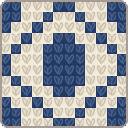
Fair Isle Diamonds12 × 12 rounds · colourworkLarge outlined diamonds with a solid centre, separated by small diamonds where the repeats meet.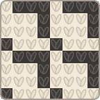
Houndstooth4 × 4 rounds · colourworkThe classic broken check, knitted small.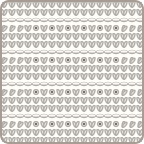
Feather and Fan Lace18 × 4 rows · laceThe classic Shetland 'Old Shale' lace: gentle waves with a scalloped edge.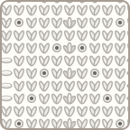
Horseshoe Lace10 × 8 rows · laceA traditional Shetland lace of rounded arches, like rows of horseshoes.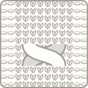
Rope Cable (C8F)12 × 8 rows · cables panelA bold rope cable: 8 knit stitches crossed every 8 rows, framed by 2 purl stitches each side.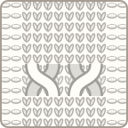
Horseshoe Cable12 × 8 rows · cables panelTwo cables crossing away from each other, forming a horseshoe shape. Honeycomb Cable8 × 8 rows · cablesAn all-over cable texture of interlocking cells, like a honeycomb.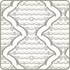
Bobble Diamond13 × 8 rows · cables panelTwo strands of knit stitches travel apart and back again over a purl background, making a chain of diamonds with a bobble in the middle of each.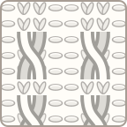
Mini Cable Rib4 × 4 rows · cablesA rib with a tiny 2-stitch cable twisting up each knit column.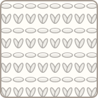
Garter Stitch2 × 2 rows · textureThe first stitch everyone learns: knit every row.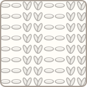
2×2 Rib4 × 2 rows · textureClassic, stretchy ribbing.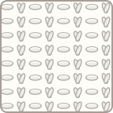
Twisted Rib2 × 2 rows · textureA 1×1 rib with every knit stitch twisted.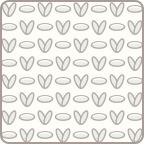
Seed (Moss) Stitch2 × 2 rows · textureA bumpy, reversible texture that lies flat and doesn't curl.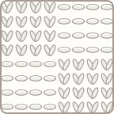
Basketweave8 × 8 rows · textureAlternating blocks of knit and purl that look like a woven basket.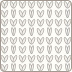
Heel Stitch2 × 2 rows · textureSlipped stitches make a thick, ribbed fabric that wears well.What the program does
- Charts you can read easily: proper knitting symbols, or pictures of the stitches as they look in your knitting.
- Written instructions, made for you: wrong-side rows are turned around, so you never have to work out "purl the knits" in your head.
- A row tracker: row by row or stitch by stitch, with how many rows you have left to go.
- A size and yarn calculator: stitches to cast on, rows to work and roughly how much yarn to buy.
- A chart designer with lace, cables, travelling stitches, bobbles and colourwork.
- Mistake checks: stitch counts that don't add up, cables drawn the wrong width, and floats long enough to snag.
- Print and share: print the pattern, or save it as a web page, a picture or plain text.
Get the program
It's one file that runs on a Mac, Windows or Linux computer, using Java (which is also free).
- Install Java from adoptium.net (once).
- Download KnittingPattern.java from the project page.
- Start it, following the step-by-step instructions.